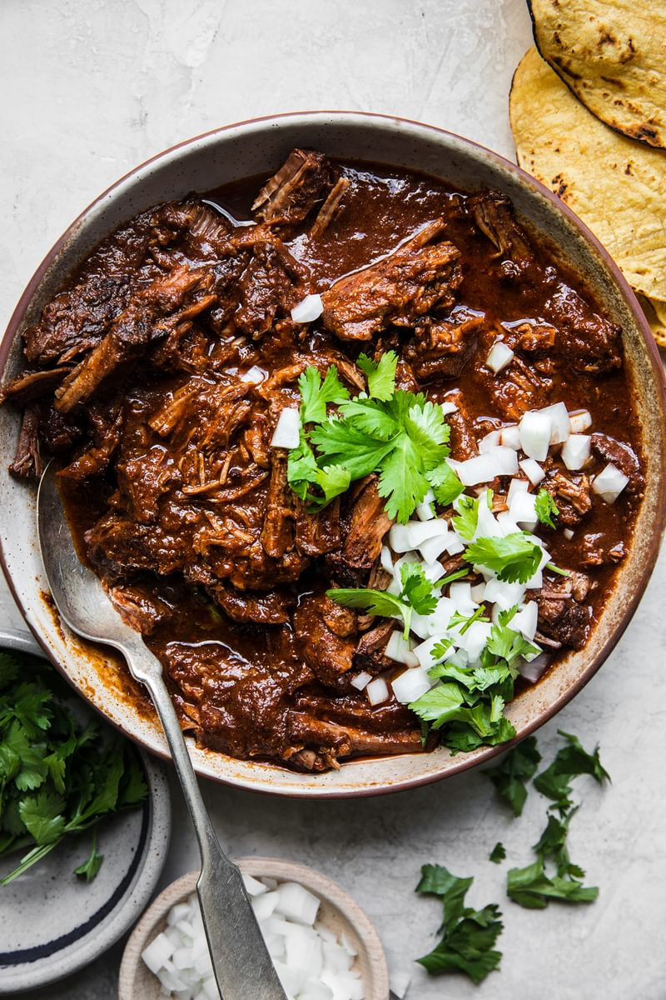

Birria

Birria de res
Found on allrecipes.com. The expected prep time for this recipe is 20 minutes,
cook time is 3 hrs and 15 minutes, and an additional 5 minutes for anything
that comes up. It should be a total of 3 hrs 40 minutes and serves 12
Ingredients
- 5 dried Anaheim chile peppers, stemmed and seeded
- 5 guajillo chile peppers, stemmed and seeded
- water to cover
- 1 tablespoon mixed spices, or more to taste
- 1 tablespoon salt, or to taste
- 3 pounds cubed beef stew meat
- 6 bay leaves
- Place Anaheim and guajillo peppers in a saucepan; cover with water and bring
to a boil. Reduce heat to medium-low and simmer until tender, about 15 minutes.
Set aside to cool for 5 minutes.
- Transfer chiles and water into a blender; add onion, mixed spices, and salt.
Blend untl smooth.
- Place stew meat in a large pot; stir in pureed chile mixture and add bay leaves.
Cook over medium-low heat until meat is very tenr, 3 to 5 hours.